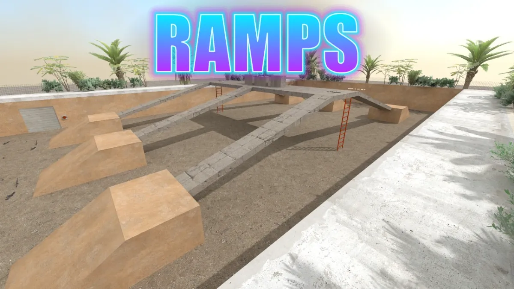
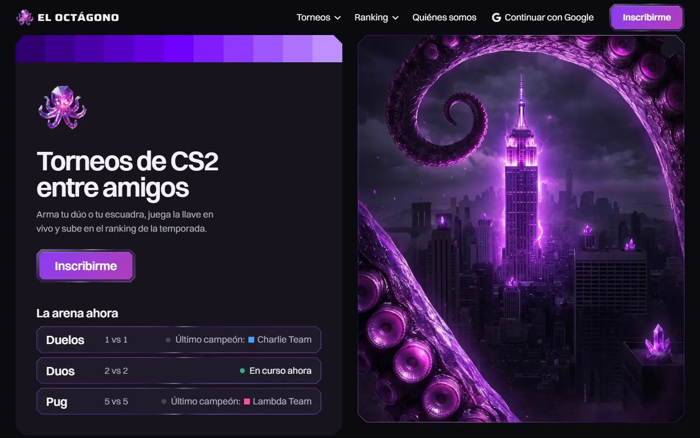

Así trabajo con Claude
Claude Code · el logo nuevo
Quiero el X2 y la fuente 4, Saira. ¿Qué más necesitas que te confirme?
Nada más. Lo que decido por mi cuenta: el pulpo de cristal va grande, en la portada, los íconos y la imagen para compartir. Para el favicon dibujo una versión plana, porque a 16 px el cristal no se ve.
publica el nuevo logo en todas sus aplicaciones
v3.5.0 en producción · 14:16
verificar 17 páginas · producción
index.html desborde 0px errores [] duelos-view.html desborde 0px errores [] ranking.html desborde 0px errores [] quienes-somos.html desborde 0px errores [] temporada-actual.html desborde 0px errores [] … y 12 páginas más, igual captura para compartir: 700 x 1068 · errores []

exportar.ps1 · antes de subir a GitHub
skills: 18 memorias: idioma-espanol.md, claude-cli-ruta.md … No subo nada: encontré datos que parecen privados: skills\cyber-neo\…\secrets-patterns.md (era un patrón de búsqueda, no una clave: arreglado) Subido a GitHub.
mi-claude guarda mi forma de trabajar con Claude Code: las reglas, lo que aprendió de mí y sus herramientas, listas para instalar igual en cualquier PC o Mac.
Qué es
No es un programa: es la manera en que Claude y yo trabajamos, escrita en archivos.
Las reglas viven en un CLAUDE.md que Claude lee en cualquier carpeta: hablar en español, no publicar nada sin mi OK, comprobar antes de decir que algo está listo.
Lo que aprendió de mí queda en lecciones y memorias. Cada vez que lo corrijo, la regla se escribe para que no vuelva a pasar.
Sus herramientas viajan con él: seis plugins, dieciocho skills y gstack. En una PC o una Mac nueva, un script lo deja todo igual.
renatopuente / mi-claude · privado
CLAUDE.md · Permisos
Publicar, hacer push o pasar a producción solo con un OK explícito del usuario para ese cambio. Cuando lo da, hacerlo cuanto antes y comprobar en vivo que quedó.
Contraseñas, códigos de un solo uso y datos de pago los escribe el usuario; nunca pasan por mí.
lecciones.md · Términos de un género
El usuario pidió «crípticos» y entregué dos veces otra cosa. Cuando el usuario usa un término de un género, abrir un sitio de ese género antes de diseñar.
memoria/idioma-espanol.md
Escribir siempre en español: la respuesta final y también cada mensaje corto que acompaña una herramienta. El usuario los ve todos.
skills/
abogado-del-diablo, all-deploy, animate, animate-expo, animation-performance, animation-vocabulary, apple-design, ask-sonner, break-ui, cyber-neo, emil-design-eng, find-animation-opportunities, improve-animations, mobile-native, pick-ui-library, prototype, review-animations, write-swift.
settings.json
superpowers, mattpocock-skills, the-architect, claude-db, aprende y taste-skill, cada uno con el repo de donde se instala. Modelo Opus, esfuerzo xhigh.
instalar.ps1
Guarda una copia de lo que había, copia las reglas y las memorias, mezcla los ajustes, instala los plugins con el Claude de Antigravity y deja gstack listo.
exportar.ps1
Junta lo nuevo de esta PC y, antes de subir, busca claves, tokens y correos personales. Si encuentra algo, no sube nada.
instalar.sh
Lo mismo que instalar.ps1, para la Mac. Si faltan jq o Bun, los instala con Homebrew, y deja las memorias en ~/Documents/Mi Claude.
exportar.sh
Lo mismo que exportar.ps1: junta lo nuevo de la Mac y, si encuentra una clave, un token o un correo personal, no sube nada.
Cómo trabajamos
Primero, pides como hablas.
Una frase, sin plantillas. Leo qué quieres, lo reproduzco y digo en una línea lo que decidí por mi cuenta.
Después lo construyo y lo compruebo.
Capturas en Chrome a cinco anchos, cero desbordes, cero errores. Si una prueba falla, busco la causa, no el síntoma.
Al final, publico solo con tu OK.
Cuando lo dices, sale rápido y lo reviso en producción. Si me equivoqué en el camino, queda una lección escrita.
Claude Code · el hero en el celular
en mobile vi que el hero se monta sobre la imagen
Lo reproduzco en el celular antes de tocar nada: 360, 390, 430 y 768 px.
La causa: la ficha tiene margin-top: -24px a propósito. La separo con el mismo hueco que en escritorio.
| Ancho | Imagen termina | Emblema empieza | Hueco |
|---|---|---|---|
| 360 | 446 | 546 | 100 |
| 390 | 477 | 577 | 100 |
| 430 | 519 | 619 | 100 |
| 768 | 564 | 664 | 100 |
17 páginas · desborde 0 px · errores 0
listo? pasa a producción cuanto antes
Publicado: v3.4.3 (1742692). Revisé las 17 páginas en producción, sin errores.
Lección nueva Antes de creer un error que reporta una prueba, revisar la prueba: una URL con una barra de más dio 404.
Lo que hicimos
-

eloctagono.onlineRediseño de las 17 páginas, v3.1 a v3.523–24 oct - El pulpo de gemaLogo nuevo con Gemini, en vector y PNG24 oct
- awp_dust_rampsMapa de CS2 hecho por código, en el Workshop22 oct
- Leyendas de temporadaEscenas y arte con Gemini, hasta 202824 oct
- Los modos del torneoUn mismo pulpo operador en tres escenas24 oct
- Las versiones del logoHorizontal, vertical, blanco, negro e íconos24 oct
- La pista de RAMPSRampas, bloques y coberturas de Dust222 oct
Cuatro días, hora por hora
Instalar- 18:17Zona de compra toda la rondaT con AK y CT con M4 al aparecerNuevo
- 18:20Portada con el título RAMPS en neónCian y morado, para el WorkshopNuevo
- 19:14CS2 se cerraba al cargar el mapaLa versión 1.41.9.2 rompió el equipo inicial: arreglado y anotado como lecciónArreglo
- 19:58Chaleco, cajas con lona, ventanas que se rompenCajas de madera de Dust2 y créditos en zonas oscurasNuevo
- 20:59Puertas que retroceden si atrapan a alguienAntes dejaban al jugador encerradoArreglo
- 21:24Avisos del Map Check resueltosZonas de compra y límites del radarArreglo
- 22:03Actualización 1 publicada en el WorkshopCon el OK, después de probarlaPublicado
- 11:07Skills de diseño instaladastaste-skill y las de Emil Kowalski; impeccable no, por sus hooks globalesHerramienta
- 12:28Portada nueva con tablero en vivoeloctagono.online, con la franja de la temporadav3.1.0
- 20:10El resto del sitio, logo y crípticosLas 17 páginas con el mismo lenguajev3.2.0
- 08:48Temporadas en español y borde de gemaManhattan Amatista, Ibiza Topacio, Osaka Rubí…v3.2.1
- 10:40Cintas de temporada y modos nuevosImágenes del pulpo operador con Geminiv3.3.0
- 11:16Aviso de conexión y leyendas de 2027Y la vinculación de cuentas, arregladav3.4.0
- 12:07Todo en español, también los avisosUna corrección de una palabra que quedó como reglaLección
- 12:08Botones con marco de vidrioCon actuaria.com como referenciav3.4.2
- 14:04El hero ya no pisa la imagen en el teléfonoY el clip de CS2 en Nosotrosv3.4.3
- 14:16Logo nuevo: el pulpo de gemaEn la barra, el emblema, los íconos y la imagen para compartirv3.5.0
- 15:15mi-claude sube a GitHubProbado como si fuera una PC nuevaPublicado
- 16:07mi-claude también en la Macinstalar.sh y exportar.sh, con HomebrewHerramienta
- 10:58Gemini no respondía (503), dos veces seguidasLeí yo mismo los límites del plan gratis de LiveKit, en su documentaciónLección
- 11:20LiveKit Cloud: 5.000 minutos gratis al mes, tope duroPor eso la voz entra con un botón; no se conecta solaNuevo
- 11:50Compilado el servidor de LiveKit, en la MacNo hay binario para Mac: Go 1.27.2 y su código fuente, versión 1.13.8Herramienta
- 12:40Token y firma de webhooks, sin el SDK de LiveKitEl mismo estilo que ya usaba el proyecto para sus notificacionesNuevo
- 13:15Vaciado de producción, a pedidoDos Casas de prueba, usuarios y fotos; la cuenta de Google, intactaHecho
- 14:05Mantener presionado, una voz a la vezSi dos hablan al mismo tiempo, cede el de identidad mayor, sin servidorNuevo
- 14:23152 pruebas en verde, con dos navegadores de verdadEntra, se ve sin conectarse, "Habla Ana" al otro ladoPublicado
- 14:50Un cierre (closure) viejo tapaba la regla de la vozEl manejador de LiveKit se registra una vez, con el estado de ese momento: pasa a una refLección
- 15:07Proyecto en LiveKit Cloud, creado en el navegadorClave, secreto en el administrador de secretos, webhook a la FunctionNuevo
- 15:08Voz publicada en producciónReglas, Functions y Hosting; cada endpoint probadoPublicado
Escribe la carpeta donde más abres Claude y copia los dos comandos para PowerShell. Antes: Git para Windows y Antigravity con la extensión de Claude Code, con tu sesión iniciada. Después: reinicia Antigravity. El repo es privado, así que solo funciona con mi cuenta de GitHub.
Escribe la carpeta donde más abres Claude y copia los dos comandos para la Terminal. Antes: git (xcode-select --install), Homebrew y Antigravity con la extensión de Claude Code, con tu sesión iniciada. Después: reinicia Antigravity. El repo es privado, así que solo funciona con mi cuenta de GitHub.
git clone https://github.com/renatopuente/mi-claude.git
powershell -ExecutionPolicy Bypass -File .\mi-claude\instalar.ps1